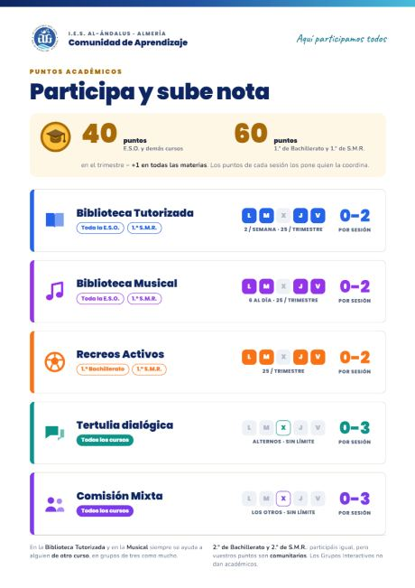
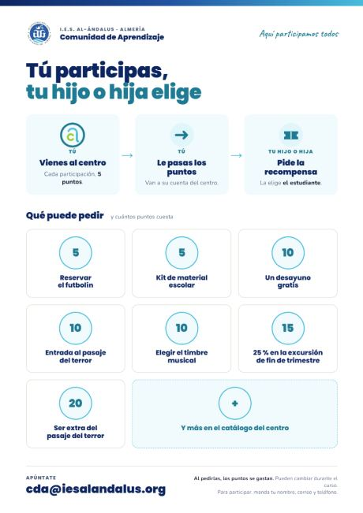
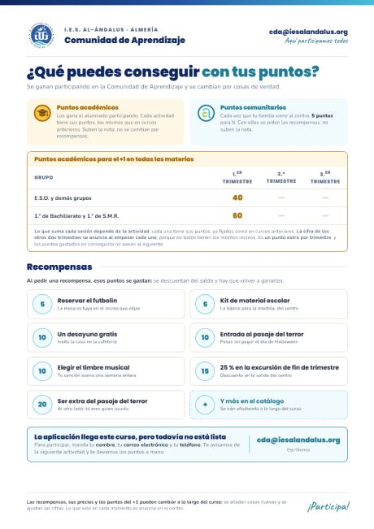
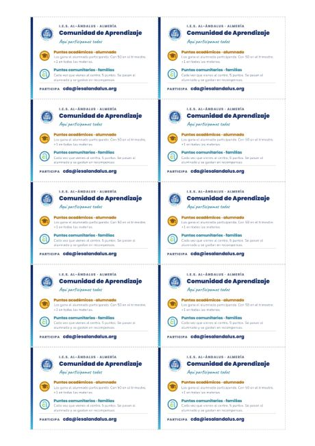

Material de aula · Curso 2026-2027
Contarlo en clase
Todo lo que hace falta para explicar al alumnado cómo se ganan puntos en la Comunidad de Aprendizaje. Está pensado para una tutoría de veinte minutos y no hay que saber nada de antes: el guion lo dice todo.
Para proyectar
Presentación interactiva
Once pantallas, con las flechas del teclado. Poco texto y letra grande.
Abrir la presentaciónPara repartir
Hoja resumen
Dos caras: delante el alumnado y los puntos académicos, detrás el voluntariado, los comunitarios y el catálogo.
Descargar en PDFAntes de entrar en clase
Guion, paso a paso
Veinte minutos. Si solo tienes diez, haz los pasos 1, 2 y 5.
-
2 minutos
Qué es una Comunidad de Aprendizaje
El centro se abre: familias y voluntariado entran en las aulas y en los recreos a aprender con el alumnado, no a mirar. Cuantas más personas adultas haya dentro, más aprende todo el mundo. Eso es todo lo que hay que entender.
-
5 minutos
Las dos monedas
Es lo único que se pueden confundir, así que va despacio: los académicos suben la nota y solo los gana el alumnado; los comunitarios sirven para recompensas y los ganan las familias (y 2.º de Bachillerato y 2.º de SMR).
-
4 minutos
Dónde se ganan
Enseña la tabla de actuaciones con los días y el sitio de cada una. Insiste en que las tertulias, las comisiones y los recreos activos son en el recreo y que ya están funcionando los cuatro: bibliotecas en Idiomas 1, comisiones en el pasillo de Mates y Lengua, tertulias en la Biblioteca y recreos activos en el patio.
-
5 minutos
Qué se puede pedir
Abre el panel de recompensas. Deja claro que no es definitivo y que lo que ellos propongan puede acabar ahí. Es justo lo que engancha.
-
4 minutos
Recoger las ideas de la clase
Saca la hoja de propuestas en la pizarra, entre todos, y que un portavoz la escriba. Una hoja por clase con quince ideas llega; treinta hojas con una idea cada una se pierden. Nos la hacéis llegar a cda@iesalandalus.org.
-
Al salir
Reparte la hoja resumen
Es para las familias, no para el alumnado: ahí está lo que tienen que saber en casa para decidir si vienen. Y ese es el objetivo de todo esto.
Lo que hay que contar
Hay dos tipos de puntos
Se distinguen por color y por dibujo, nunca solo por color. Son las monedas de la aplicación.
Puntos académicos
Solo los consigue el alumnadoSe ganan participando en las actuaciones de la Comunidad. Sirven para conseguir un punto más en todas las materias al final de cada trimestre.
40 puntos en 1.º, 2.º, 3.º y 4.º de E.S.O.60 puntos en 1.º de Bachillerato y 1.º de SMR
Puntos comunitarios
Las familias, y 2.º de Bach. y 2.º de SMRSirven para pedir recompensas y no suman nota. Cada vez que un familiar participa gana 5, y se los pasa a un hijo o una hija para que los use.
5 puntos por cada participación de alguien de la familia2.º de Bach. y 2.º de SMR ganan aquí la misma cantidad que los demás en académicos
La pregunta que siempre sale: «¿entonces mi familia me sube la nota?». No. Lo que gana la familia son puntos comunitarios, que valen para recompensas. La nota solo la sube lo que hace el propio alumnado.
Dónde se ganan
Dos tablas, porque son dos monedas
La misma actividad da puntos académicos a quien estudia aquí y puntos comunitarios a un familiar. No decide la actividad: decide quién participa. Por eso cada cantidad lleva su moneda al lado.
Lo que gana el alumnado · puntos académicos
Suben la nota: al llegar a la meta del curso, +1 en todas las materias de ese trimestre.
| Actuación | Gana | Cuándo y dónde | Quién |
|---|---|---|---|
| Consejo escolar El alumnado que representa a sus compañeros y compañeras |
4 por sesión |
Cuando se convoca una sesión. | Los representantes del alumnado |
| Tertulia dialógica Se lee un fragmento y se comenta entre todos |
3 por sesión |
Miércoles alternos, en el recreo. En la Biblioteca. Cada semana que tocan hay copias del fragmento en el hall. | Todo el alumnado |
| Comisión mixta | 3 por sesión |
Miércoles alternos, en el recreo. En el pasillo de Matemáticas y Lengua (1.ª planta); la de FP, en su aula de siempre, por los ordenadores. | Todo el alumnado |
| Biblioteca tutorizada | 2 por sesión |
Lunes, martes, jueves y viernes, en el recreo. En Idiomas 1 (2.ª planta). | 1.º a 4.º de E.S.O. y 1.º de SMR. Por parejas de cursos distintos |
| Recreos activos | 2 por sesión |
Lunes, martes, jueves y viernes, en el recreo. En el patio del centro, con deportes y juegos de mesa. | Los organizan 1.º de Bachillerato y 1.º de SMR |
| Biblioteca musical | 2 por sesión |
Lunes, martes, jueves y viernes, en el recreo. En el Aula de Música. | 1.º a 4.º de E.S.O. y 1.º de SMR |
| Grupo interactivo Haciendo de voluntario o voluntaria en una mesa |
3 cada vez |
En las aulas, cuando se convocan. | Solo el alumnado de Bachillerato y de SMR. Lo asigna la coordinación de grupos interactivos; por asistir sin más no se ganan puntos |
¿Hay un máximo de puntos por actividad? Se decidirá según las necesidades del centro, y quedará claro durante el primer mes de cada trimestre. Hasta entonces, cuenta cada sesión.
Lo que se hace dentro de una materia no da puntos: da nota en esa materia. Si una actividad la propone una asignatura, quien participa lo hace como parte de ella y el profesorado la evalúa ahí. Los puntos son para lo que se hace además de la clase.
Lo que gana quien viene de fuera · puntos comunitarios
Se cambian por recompensas del catálogo. No van a la nota, van al catálogo.
| Quién participa | Gana | En qué actuación | Detalle |
|---|---|---|---|
| Una familia | 5 cada visita |
Cualquiera: grupos interactivos, tertulias, comisiones, bibliotecas… | Son 5 por visita. Si hay más de un hijo o hija en el centro, se pueden repartir entre ellos |
| Una persona voluntaria | 5 cada visita |
Cualquiera de las actuaciones | Se marca la participación después de la actividad, no al apuntarse |
| Consejo escolar | 5 por sesión |
Asistir a una sesión del consejo escolar | Para las familias que representan a las demás |
| 2.º de Bachillerato y 2.º de SMR |
2 o 3 lo mismo que los demás |
Las mismas actuaciones que el resto del alumnado | Ganan la misma cantidad que los demás, pero en comunitarios |
Qué se puede pedir
Las recompensas de ahora mismo
Se piden con puntos comunitarios. Lo más barato cuesta una sola participación de alguien de la familia: la idea es que se vea el resultado el mismo día, no dentro de un mes.
Este catálogo no es definitivo. Va a cambiar a lo largo del curso, y una parte de lo que entre saldrá de lo que proponga el alumnado. Dilo en clase: es lo que más anima a participar.
Las que consisten en elegir algo, las aprueba el profesorado responsable. La música del recreo, el timbre musical y el modelo 3D se eligen, sí, pero lo elegido tiene que ser apropiado para un centro escolar. Conviene decirlo al enseñar el catálogo, y no después: el problema no es negar una canción, es prometer que no hay filtro.
Y las que necesitan a alguien del profesorado, van cuando se pueda. El huerto, la impresión 3D, la tutoría, la tertulia: se cumplen todas, pero según la disponibilidad de quien las hace posibles. Un vale no caduca, así que esperar no cuesta nada; prometer un día concreto, sí.
Para imprimir y repartir
Material
Los carteles están hechos para imprimirse en el centro, en A3 o en A4.
Hoja resumen para casa
Dos caras, en PDF. Delante, el alumnado y los puntos académicos. Detrás, las familias, los comunitarios y el catálogo. Se imprime a doble cara.
PDF · 2 páginasHoja de propuestas de la clase
Para rellenar entre todos en la pizarra y que un portavoz la pase a limpio. Una por clase.
Abrir e imprimir
Cartel de puntos académicos · alumnado
Las actividades, los días de cada una y los puntos que suman.
PDF · 1 página
Cartel de recompensas · familias
Qué puede pedir su hijo o hija con los puntos que se ganan viniendo al centro.
PDF · 1 página
Cartel de recompensas · completo
Las dos monedas, el catálogo y cuántos puntos hacen falta para el +1.
PDF · 1 página
Tarjeta de la Comunidad
Tarjeta de visita con las recompensas por detrás. Diez por hoja, a doble cara.
PDF · 2 páginasPor si preguntan
Cuatro respuestas cortas
«¿Los puntos se pierden?»
Los académicos se cuentan por trimestre: al llegar a la meta se anota el +1 y lo que sobra cuenta para el trimestre siguiente.
«¿Mi familia tiene que venir mucho?»
Con una vez ya hay recompensa que pedir. No hace falta comprometerse a nada más.
«¿Y si en mi casa no puede venir nadie?»
Los puntos académicos —los de la nota— se ganan participando uno mismo, sin que venga nadie de casa. Eso no depende de la familia.
«¿Dónde veo mis puntos?»
En la aplicación del centro, con la cuenta de cada persona. Mientras tanto, lo lleva quien coordina cada actuación.